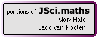

|  |
JSci.maths |
September 2003
This package is composed of some portions of the maths package of the JSci Java library, created by Mark Hale with Jaco van Kooten and other collaborators. This package is used by other packages in the Mesquite system.
The URL for JSci is http://jsci.sourceforge.net.
The JSci package is necessary for some of the other packages available with Mesquite, including the Genesis package of character evolution models.
To install the JSci package, the "JSci" directory must be installed within "Mesquite Folder".
© Mark Hale and Jaco van Kooten, 2003